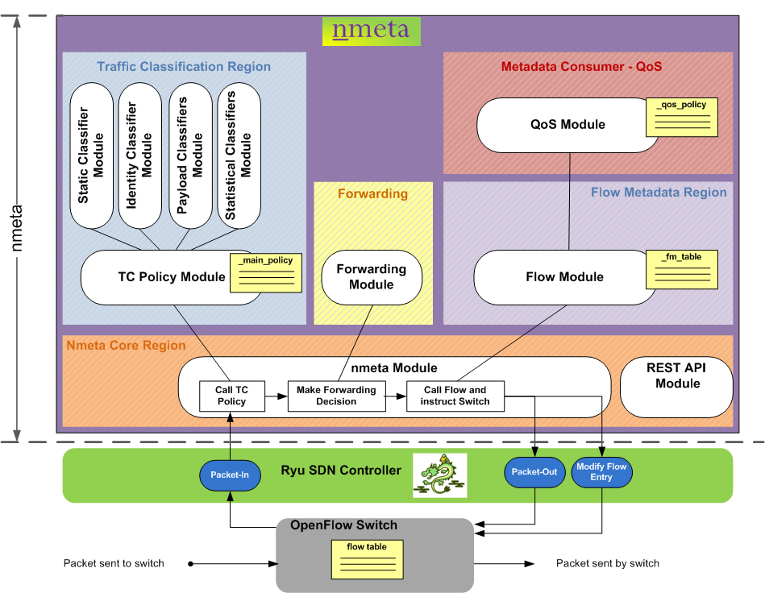
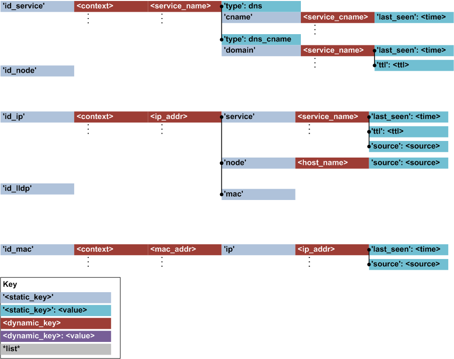
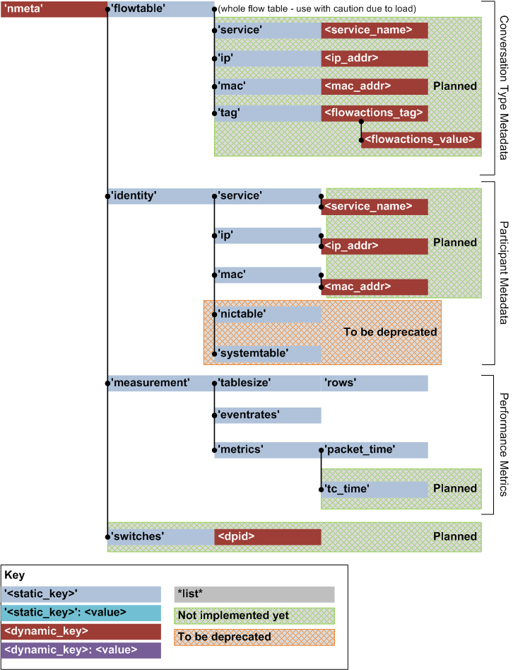

Architecture and Design
Contents:
Overview
Identity Metadata Structure
API Hierarchy
Overview
Nmeta is an application that sits atop the Ryu SDN controller.
Here's an overview of how nmeta processes packets:

Here are the (simplified) steps for processing a packet that does not have switch flow table entries:
- A packet arrives at an OpenFlow switch and is not matched by the flow table(s). The table-miss action is set to send the packet to the controller so the switch sends the packet to the controller
- The Ryu SDN controller receives the packet-in event and calls the nmeta module
- The nmeta module calls the tc_policy module which runs the packet past a policy to determine if there are any actions
- The tc_policy module sends the packet back to the nmeta module with any actions
- The nmeta module calls the forwarding module to make a forwarding decision
- The nmeta module sends the packet and any actions to the flow module
- The flow module both stores flow metadata acts as an interface to consumers of the data. It provides information back to the nmeta module about any special treatment for the packet
- The nmeta module sends (via Ryu) instructions to the switch on sending the packet out and installing a flow table entry (in some cases)
- The switch sends the packet out, and installs a flow table entry (if instructed to)
And a more detailed view:
(Click to Enlarge)Points to note in the above diagram:
- Maintenance of data structures that hold dynamic state is triggered from the nmeta.py module. This is too prevent them from becoming too large over time as data accumulates.
- The switch_abstraction.py module in the nmeta Core region provides an abstraction layer from specific switch implementation details
- The api.py module in the nmeta Core region provides a RESTful API interface
Identity Metadata Structure
Identity metadata can be used in traffic classification of flows, and also other purposes such as general visibility of network participants.
Principles:
- Optimise data structures for fast lookup, to maximise traffic classification efficiency (when rules reference identity metadata)
- The consumer of the identity metadata is responsible for the trustworthiness and validity of the data
- Identity metadata records provide attribution of data source and expiry time so that consumer can make informed decisions (i.e. LLDP metadata may not be very trustworthy as it is a clear text protocol with no authentication, however 802.1x is more trustworthy)
- LLDP advertisements
- DHCP offers / ACKs
- DNS answers
- Packet-in events (IP address etc)
Identity metadata is stored in a set of nested data structures (note that both the structure and diagram are currently under development):

API Hierarchy
Here is a visualisation of the API hierarchy:
